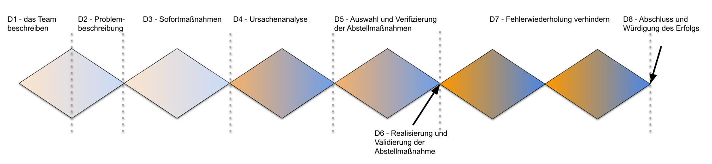

Grundlagen
Das Kapitel “Grundlagen” enthält theoretische Hintergründe und Informationen, die für das Verständnis des Leitfaden-Themas relevant sind. In diesem Kapitel wird auf andere verfügbare Quellen und Literatur verwiesen (Hub- oder Kurationsfunktion).
Vorbemerkungen
Wie dieser Lernpfad verwendet werden kann
Es gibt viele Wege, diesen Lernpfad “Probleme strukturiert lösen” gewinnbringend zu nutzen. Finde gerne deinen eigenen. Zur Inspiration hier ein paar typische Möglichkeiten:
- “Klassisches” lernOS-Format:
In einer Gruppe von “Peers” in jeder Woche ein Stück weit in die strukturierte Bearbeitung von Probleme eintauchen. Dieses Format ist in den Formulierungen und den Katas angenommen. - Learning-by-doing-Schnelldurchlauf:
Ihr habt eine harte Nuss zu knacken und wisst nicht wie. Nehmt diesen Leitfaden und arbeitet Euch Schritt für Schritt (und den gegebenenfalls notwendigen Schleifen…) durch den Lernpfad. Vermutlich dann kontinuierlich innerhalb einer kurzen Zeit. Die Kapitel sind dann nicht Wochen, sondern Abschnitte eurer “Workshops”, zwischen denen dann sinnvolle, von euch bestimmte, Pausen liegen (5 Minuten, um die Beine zu bewegen oder länger, wenn Ihr über Ideen nachdenken oder noch Daten sammeln wollt). Vermutlich wollt Ihr dann Katas zur Reflektion des Gelernten weglassen, um schneller zum Ziel zu kommen. Umso wichtiger wird dann die Retrospektive am Ende für Euch. - Schmetterling-Methode:
Lest den Lernpfad, vertieft was Euch gefällt mit den angebotenen Quellen oder eigenen Recherchen. Wandert von Thema zu Thema, von Kata zu Kata, der Reihe nach oder zufällig. Lasst den Lernpfad liegen, kommt wieder darauf zurück, wenn Ihr Zeit dafür und das Bedürfnis danach habt.
Keine dieser Methoden ist “richtig” oder “besser”. Vermutlich findet Ihr einen ganz anderen, eigenen Zugang. Euer Kontext wird bestimmen, was gut für euch ist und was für Euch möglich sein wird.
Wie gehe ich also am besten vor?
Finde eine Gruppe - in der Beschreibung wird von 4 Personen (mit Dir) ausgegangen. Wenn ihr mehr oder weniger seid, kann vieles verändert werden, so dass es auf eure Gruppe passt.
Ihr könnt in der Gruppe zusammen ein gemeinsames Problem lösen, oder alle Gruppenmitglieder haben jeweils eigene Projekte, deren Fortgang sie in der Lerngruppe reflektieren. Letzteres wird im folgende angenommen. Wenn ihr gemeinsam an einem Problem arbeitet, oder ihr schneller sein wollt als beschrieben, passt die Katas euren Bedürfnissen an.
Alleine den Lernpfad zu bearbeiten ist möglich, wird aber nicht empfohlen, da wesentliche Katas darauf beruhen, eigene Ergebnisse im Team vorzustellen, darüber zu reflektieren und so zu vertiefen. Wenn Du keine Gruppe findest, vielleicht hast Du eine:n Coach:in oder Mentor:in (Kolleg:innen, Chef:in, Freund:innen, Dritte, …), mit der oder dem Du reflektieren kannst?
Wie werde ich hier angesprochen? Welche Sprache wird verwendet?
Du hast es schon gemerkt, hier wird geduzt. Dieser Lernpfad soll ein Angebot auf Augenhöhe sein.
Personen werden neutral bezeichnet oder es wird “gegendert”, wenn sich keine neutrale Formulierung finden lies. Vermutlich finden sich auch Formulierungen, die unbewusst im generischen Maskulinum stehen - bunt, nicht perfekt.
Begriffsbestimmungen, Definitionen
- Problem
- Ein Problem zu haben ist ein Zustand, in dem ein zu erreichendes Ziel (noch) nicht erreicht wurde und in dem die Art und Weise der Zielerreichung (noch) nicht klar ist. Details siehe auch https://de.wikipedia.org/wiki/Problem.
- Gerd Wohland: “Ein Problem ist ein Zustand, den man nicht lassen kann wie er ist. Weil, wenn man in lassen würde, wie er ist, würde Schaden entstehen” https://www.youtube.com/watch?v=ZEmrVtH3QCg
- 8D-Report Mit dem “8D-Report” wird in der Automobilindustrie üblicherweise gegenüber den Kunden dokumentiert, wie bei der Problemlösung vorgegangen wurde. Es ist also eine Berichtsform über den Problemlösungsprozess. Meist verlangen Kunden diese Art der Dokumentation. Je nach Art des Problems und damit der Vorgehensweise bei der Problemlösung kann diese stark formalisierte Art der Dokumentation zu aufwendig oder einschränkend sein. Für eine wirksame und effiziente Problemlösung kann es wichtig sein, darauf zu achten, diese Berichtsform nicht zum “Framing” des Problems zu verwenden. Details finden sich im VDA Band "8D - Problemlösung in 8 Disziplinen".
Fragen zum Lernpfad
- Woran orientiert sich der Lernpfad?
Der Lernpfad orientiert sich am sogenannten Cynefin-Framework, dem “double diamond”-Ansatz aus dem “Design Thinking” und der 8D-Systematik der Automobilindustrie. - Wie ist der Lernpfad aufgebaut?
Der Lernpfad gliedert sich grob in folgende sechs Abschnitte:- Sich für die Lösung aufstellen (Abschnitte 0 bis 2)
- Das Problem sinnvoll kategorisieren (Abschnitt 3)
- Eine für das Problem möglichst adäquate Lösungsstrategie erarbeiten (Abschnitte 4 bis 7)
- Lösungen aktiv suchen (Abschnitte 8 und 9)
- Lösungen überprüfen (Abschnitt 10)
- Erkenntnisse transferieren und zusammenfassen (Abschnitt 12)
- Brauche ich besondere Tools oder Werkzeuge?
Im Internet und in Unternehmen finden sich diverse Vorlagen zur 8D-Methode (auch A3-Template). Es existieren auch Softwarelösungen, die euch durch den Prozess begleiten. All dies kann dich unterstützen, ist aber nicht zwingend nötig (außer ein Kunde will genau so etwas von euch sehen…). Vom (Erst-)Autor des Lernpfads existiert eine Vorlage für ein Kanban-Board zur 8D-Methode in Trello. Probiere sie gerne aus und melde dich, wenn es gefällt.
Hinweise
- Dieser Lernpfad ist keine vollständige Implementierung des 8D-Konzepts nach dem VDA. Er ist nicht vom VDA autorisiert. Er kann nicht ohne weiteres als Ersatz für ein formelles Training zur 8D-Methode im Sinne des VDA verwendet werden.
- Die in diesem Lernpfad dargestellte Methode ist eine möglich Methode, Problemlösung strukturiert zu betreiben. Viele Probleme lassen sich auch über andere Methoden lösen, vielleicht sogar besser. Es bleibt dir überlassen, abzuschätzen, ob die hier dargestellte Methode für deine Problemstellung die richtige ist.
Gedankenrahmen (Frameworks)
Probleme kategorisieren - Das “Cynefin-Framework”
Probleme lassen sich mit Hilfe des “Cynefin” (sprich “ke-nä-win”, siehe und höre auch im Video unten)-Frameworks einteilen in die Domänen “einfach”, “kompliziert”, “komplex” und “chaotisch”. Je nachdem, über welche Domäne sich ein Problem beschreiben lässt, ergeben sich spezifische Herangehensweisen:
- Einfach: “Pack-an”-Probleme, deren Lösung auf der Hand liegt und die ohne Aufwand gelöst werden können. Herangehensweise: beobachten → kategorisieren → reagieren
- Kompliziert: Probleme, die sich analysieren lassen, deren Analyse Zusammenhänge von Ursache und Wirkung klar erkennen lassen und deren Lösung durch adäquate Manipulation des zu Grunde liegenden Mechanismus gelöst werden können. Herangehensweise: beobachten → analysieren → reagieren
- Komplex: Probleme, die keine klare Zusammenhänge von Ursache-Wirkung zeigen oder solche Zusammenhänge nicht erkennen lassen. Lösungen können sinnvoll durch zielgerichtetes und lernendes experimentieren gefunden werden. Herangehensweise: ausprobieren → beobachten → reagieren
- Chaotisch: Probleme, deren Dynamik keine Zeit für Analysen oder Experimentieren lässt sondern schnelles Handeln erfordert. Eine “Lösung” wird nur gefunden, wenn akute Maßnahmen die Dynamik so stark bremsen, dass das Problem komplex oder kompliziert wird. Herangehensweise: agieren → beobachten → reagieren
Eine fünfte Domäne des Modells ist “verwirrt”. In dieser Situation lässt sich eine Lösung nicht finden. Die dringendste Aufgabe ist es dann, sich Klarheit über die Art des Problems (oder besser: der eigenen Sichtweise darauf) zu verschaffen, bevor die “Lösung” angegangen wird.
Eine kurze Einführung findet sich auf den Seiten der (Er-)Finder https://thecynefin.co/ oder in diesem Video: The Cynefin Framework
Probleme kategorisieren - weitere Unterscheidungen
Day Cynefin-Framework ist eine Möglichkeit, Probleme zu kategorisieren. Andere nützlich Unterteilungen sind im folgenden aufgeführt. Je nachdem, für welche Sichtweise ihr euch bei der Bearbeitung entscheidet(!), wird die Lösungsfindung eine andere sein:
- Mikro- und Makroebene
Ist das Problem eines, das nur lokal auftritt und eine klar abgegrenzte Ursache hat? Oder ist es das Problem eines, das aus dem System einer Organisation entspringt, so dass Ursachen schwerer zu fassen sind? Ein Beispiel sei ein Schlagloch auf einem Parkplatz: Ist einem Handwerker etwas schweres heruntergefallen, das den Bodenbelag zerstörte? Oder ist die Besitzerin des Parkplatzes überfordert damit, den Parkplatz adäquat zu warten und instand zu setzen? - Entwicklungsstatus eines Produkts oder Regelhaftigkeit der Problemursache
Ist Produkt noch in der Entwicklung oder befindet es sich in Serienproduktion? Anders: Entstammt das Problem einem bisher einmaligen Vorgehen oder laufen die Prozesse, in denen das Problem auftrat, immer gleich oder ähnlich ab? Ein Beispiel sei ein Materialfehler bei der Herstellung eines Produkts: In einem Prototyp ist so etwas sogar typisch, in der Serienproduktion sollte es nicht (mehr) vorkommen. - Domäne, in der das Problem auftritt
Ist das Problem ein technisches, ein organisationales oder ein zwischenmenschliches? Sicher fallen dir noch weitere Kategorisierungen ähnlicher Art ein. - Quelle des Problems oder Referenz des Problems
Woher kommt der Druck, das Problem zu lösen? Will es jemand von "außerhalb" (externe Referenz) oder ist es ein Problem, das nur im Rahmen einer Organisation von Bedeutung ist (interne Referenz)?
Siehe dazu auch das Interview mit Gerhard Wohland über externe und interne Referenzen
Vom Problem zur Lösung - Die “Double-Diamond”-Methode
Das britische Design Council hat für Design-Prozesse die “Double-Diamond”-Methode entwickelt. Grundlage der Idee ist es, dass eine Lösung durch eine Folge von vier Schritten gefunden wird:
- Entdecken/Untersuchen - hier wird das Problem erforscht, entdeckt und analysiert. Einflussfaktoren, Sichtweisen und Ideen werden gesammelt.
- Definieren - hier wird aus der vorhergehenden Sammlung der Ansatz zur Lösung entwickelt. Aus der Erkenntnis, das nicht alles gleichzeitig angegangen werden kann, werden die wesentlichen Punkte für eine Lösung bestimmt.
- Entwickeln - hier werden vom bestimmten Ansatzpunkt aus Lösungen entwickelt und ausgedacht. Erste Prototypen oder Experimente werden gemacht, um Wirkungen und Erfolge abschätzen zu können.
- Liefern - hier erhält die Lösung aus den Erfahrungen der Prototypen oder Experimente ihren Feinschliff und die abschließende Form.
Die Denkweise in den Schritten ist alternierend divergent (oder “ausschweifend”) und konvergent (oder “zusammenführend”). In einer graphischen Darstellung ergeben sich daraus zwei Rauten (englisch “diamond”), daher der Name.
Wesentliche Prinzipien guter Lösungsprozesse sind laut Design Council
- (Mit-)Menschen zuerst - Lösungen von den Personen aus denken, die von der Lösung profitieren und davon betroffen sind.
- Kommunizieren - bevorzugt mit Bildern und so, dass alle beteiligten Personen ein gemeinsames Verständnis entwickeln.
- Zusammen arbeiten und gestalten - damit alle beteiligten voneinander lernen und sich gegenseitig befeuern können.
- Wiederholen, wiederholen, wiederholen - Durch Experimente und Prototypen Schwierigkeiten und (Denk-)Fehler rechtzeitig erkennen und vermeiden. Durch Wiederholungen Vertrauen und Sicherheit für eine gute Lösung gewinnen.
Ein Vorteil dieses Rahmenwerks ist es, dass Kurzschlüsse durch zu frühe Festlegung während der Ideenfindung oder Verzögerungen durch Verzettelung beim Machen vermieden werden. Details beschreibt das Design Council auf seiner Webseite, unter anderem hier: https://www.designcouncil.org.uk/our-work/skills-learning/tools-frameworks/framework-for-innovation-design-councils-evolved-double-diamond/
Problemlösung in der (Automobil)-Industrie - der 8D-Prozess
Die Automobilindustrie verwendet den “8D-Prozess” (auch bekannt als “A3”) um Probleme in der Lieferkette zu adressieren, die Lösungsfindung zu steuern und die Ergebnisse daraus zu dokumentieren.
Der Prozess ist hochgradig formalisiert und wird in der Lieferkette aktiv eingefordert.
Der Prozess basiert auf Erfahrungen und Modellen, wie Probleme aussehen und gelöst werden können. Das alles mit einem Fokus auf Produktion und Logistik.
Auch wenn die sehr strukturierte Darstellung den Eindruck vermittelt: Auch die Industrie weiß: Problemlösung ist selten ein linearer Prozess. Rücksprünge in frühere Phasen sind immer möglich oder sogar erwartbar.
Die mit dem 8D-Prozess einhergehenden Einschränkungen (besonders im Hinblick auf die oben erwähnten Rahmenwerke) sollen hier nicht beschrieben werden. Sie werden in diesem Lernpfad in den Katas “durchlebt”.
Im folgenden werden die acht Schritte des 8D-Prozesses kurz beschrieben. Alle Details finden sich in der Veröffentlichung “8D - Problemlösung in 8 Disziplinen” des VDA unter https://webshop.vda.de/QMC/de/8d-problemlösung-in-8-disziplinen.
Die beteiligten Funktionen und Personen finden (D1)
Ein Problem ist nicht einfach “da”, sondern wird an eine Organisation herangetragen, üblicherweise von “außen”. Wie oben in der Definition beschrieben, gibt es ein Ziel, im besten Fall spezifisch, messbar, erreichbar und terminiert beschrieben (”SMART”, etwa über im Vorfeld vereinbarte Produktspezifikationen und Liefertermine), das nicht erreicht wurde oder nicht erreicht werden wird. Es gibt also ein:e Entdecker:in des Problems, die:der eine Lösung nachfragt.
In der Organisation muss es nun eine Funktion geben, die ein Interesse daran oder die Aufgabe hat, das Problem zu lösen und die Macht hat, Ressourcen (Zeit von Personen, Gelder, Maschinenzeit, …) freizustellen, um an der Lösung des Problems zu arbeiten - der:die Sponsor:in.
Der:die Sponsor:in kann, sollte oder muss eine Person benennen, die die Problemlösung aktiv vorantreibt. Diese Teamleitung sollte Kenntnisse in strukturierter Problemlösung haben (oder gewillt sein, sich diese zu erarbeiten ;-) ) und fähig sein, ein Team zu leiten. Der:die Sponsor:in kann die Teamleitung auch selbst übernehmen.
Je nach Art des Problem kann, sollten oder müssen weitere Personen hinzugezogen werden, die spezifische Kompetenzen oder Sichtweisen mitbringen, die bei der Problemlösung benötigt werden. Teammitglieder können dauerhaft oder spontan dazugeholt werden. Ob ein Teammitglied geeignet ist, kann auch intuitiv bestimmt werden. Bei Bedarf und neuen Erkenntnissen darf die Teamleitung sich nicht scheuen, das Team anders zusammenzusetzen. Manche setzen auch auf Teammitglieder, die sich freiwillig melden, um mitzuwirken. Es kann helfen, die Rollen und Aufgaben im Team im Vorfeld zu klären.
Je nach Größe des Teams und der Zusammensetzung kann es hilfreich sein ein:e Moderator:in (auch: Fazilitator:in) hinzuzuziehen oder einem Teammitglied diese Rolle zuzuschreiben, ähnlich wie “Agile Coaches” oder “Scrum Master” in Entwicklungsprojekten eingesetzt werden. Diese Person kann helfen, die Arbeit zu strukturieren, besonders, wenn sie über entsprechende Methodenkompetenz verfügen.
Das Problem beschreiben (D2)
Eine konkrete Beschreibung eines Problems hilft dabei, eine Lösung zu erarbeiten, die wirksam ist und sich im Rahmen der Beschäftigung mit dem Problem sich nicht von anderen Auffälligkeiten ablenken zu lassen.
Eine gute Beschreibung eines Problems beschreibt zuerst konkret die Abweichung - bestenfalls über messbare Merkmale, wie Ort, Zeitpunkt, Abmessungen, Farben, Gerüche, … Es hilft, sich anhand der Fragewörter wer, wann, wo, wie viel, wie häufig dem Problem zu nähern. Wenn Personen betroffen sind, sind aber Gefühle und Meinungen ebenso wichtige Elemente der Beschreibung. Achtet darauf, in diesem Schritt vorschnelle Schlüsse auf die Ursache des Problems (noch) zu unterlassen.
Im Anschluss lassen sich, je nach Problem und Umfeld, noch weitere Daten und Fakten rund um das Problem sammeln. Achtet auch darauf, euch anzuschauen, in welchem Kontext das Problem nicht auftrat oder entdeckt wurde (sogenannte “Is/Is-Not”-Analyse). Aber Achtung: Eine hinreichend gute Beschreibung reicht, um weiter zu arbeiten. Andere Daten können meistens später noch mit eingebracht werden.
Der Cynefin-Ansatz und der 8D-Prozess
Die hier präsentierte D8-Herangehensweise ist entwickelt und prädestiniert für “komplizierte” Probleme, zum Beispiel in der industriellen Serienfertigung.
Bei “einfachen” Problemen helfen Euch erprobte Standardlösungen (auch bekannt als ”Best Practices”). Wenn ihr sicher seid, ein solches Problem zu haben, ist das D8-Verfahren zu viel des guten und überflüssig. Anders: “Nich lang schnacken, maken!”
Für “komplexe” Probleme ist das D8-Verfahren zu langsam und leitet fehl. “Komplexe” Zusammenhänge können nicht vollständig begriffen werden und Maßnahmen, die in einem Kontext helfen, können unter veränderten Bedingungen schädlich sein. Solltet ihr “komplexe” Probleme lösen müssen, macht euch klar,
- dass das Problem nicht vollständig verstanden werden kann (→ Das Problem verstehen - Ursachenanalyse (D4)),
- dass die Lösung (→ Eine Lösung planen - Abstellmaßnahmen (D5)) nur die beste Vermutung sein kann,
- dass auch nach der Umsetzung (→ Die Lösung umsetzen - Maßnahmen umsetzen (D6)) das System ständig weiter beobachtet werden muss und
- dass eine Absicherung für alle Eventualitäten (→ Sich absichern - Fehler in der Zukunft vermeiden (D7)) schlicht unmöglich ist.
“Komplexe” Problemlösung verlangt von euch, Risiken einzuschätzen (analog “D4”), abwägend die beste nächste mögliche Aktion anzugehen (”D5”), die Reaktion des Systems zu beobachten (”D6”) und aus der Beobachtung zu lernen (”D7”). Das geschieht typischerweise in schneller, wiederholter Schrittfolge von “Experimenten”. Das gelingt am besten mit erfahrenen Experten, die das Problem in vielen Dimensionen adäquat erfassen können. Irgendwann werdet ihr durch eure Versuche die Reaktionen des Systems hinreichend verstanden haben, um eine akzeptierte, stabile Situation ansteuern zu können - und das wird eure “Problemlösung” (für den Moment) sein.
“Chaotische” Probleme verlangen eine Feuerwehr, die dafür sorgt, dass das System in einen behandelbaren Zustand gewandelt wird. Hier hilft nur ein trainiertes Team, das gut aufeinander abgestimmt sinnvolle Maßnahmen schnell umsetzt.
Das Problem begrenzen - Sofortmaßnahmen (D3)
Als nächstes ist es meistens sinnvoll, die Auswirkung des Problems zu begrenzen oder zu beseitigen. Typische Beispiele sind: Das Beseitigen von ausgetretenen Flüssigkeiten, die Versorgung von Verletzten nach einem Unfall oder das Sortieren von teilweise fehlerhaften Produkten.
Hier handelt es sich um kurzfristige, “einfache” Maßnahmen, die schnell umgesetzt werden können. Diese Maßnahmen sind gekennzeichnet durch einen kurzfristigen starken Kraftakt. Zweck ist es, sich dadurch Zeit für die Ursachenanalyse oder die Stabilisierung des Systems zu verschaffen.
Natürlich muss die Maßnahme sinnvoll und wirksam sein. Mit Rückgriff auf die Problembeschreibung (Das Problem beschreiben (D2)) sollte eine wirksame Beseitigung der Folgen des Problems möglich sein. Je nach Bedeutung der Folgen, solltet ihr die Wirksamkeit der Maßnahme darlegen oder mit Daten nachweisen können. Die Aufwände für die Sofortmaßnahme kann hoch sein oder andere Funktionen eines System stören. Bedenkt auch das bei der Auswahl der Maßnahmen.
Gegebenenfalls ist es zusätzlich nötig, ein “problematisches” System dauerhaft zu beobachten. Beispiele sind: 100-Prozent-Kontrolle der Produktion einer zweifelhaften Maschine, Videoüberwachung eines gefährdeten Orts.
Das Problem verstehen - Ursachenanalyse (D4)
In der Ursachenanalyse geht ihr dem Problem auf den Grund. Sinnvolle Fragen dazu sind
- Warum trat das Problem technisch auf (Abfolge der Ereignisse)?
- Warum wurde das Problem erst spät oder gar nicht entdeckt (Messungen und Beobachtungen der Ereignisse)?
Über die lokale oder “technische” Analyse hinaus, lässt sich der Kreis der Ursachenanalyse auch weiter ziehen. Das wird auch “systemische” Analyse genannt. Mögliche Fragen sind dann:
- Warum wurde zugelassen, dass das technische Problem auftrat?
- Warum wurde zugelassen, dass das System nicht adäquat beobachtet wurde?
Typische Methoden für eine strukturierte Ursachenanalyse sind die folgenden:
- Prozessprüfung/Re-enactment:
Dort, wo das Problem aufgetreten ist wird Schritt für Schritt nachvollzogen, wie es zu dem Problem kam. Das ist besonders in der Produktion möglich und sinnvoll, kann aber auch für Interaktionen (etwa bei Dienstleistungen) nachvollzogen werden. Wichtig ist es immer, wirklich vor Ort zu arbeiten. - 5-Why - Frage fünf mal “Warum?”:
Durch konsequentes, ergebnisoffenes Hinterfragen der spontan genannten Ursache kann ein Problem bis zu seiner Wurzel verfolgt werden. Ihr seid erfolgreich, wenn ihr die Antworten umkehrt und eine plausible “5-Therefor”-Kette aufbaut: “Dieses geschah, deswegen passierte jenes, deswegen passierte… , deswegen kam es zu dem Problem” - Ursache-Wirkungs-, Fischgräten- oder Ishikawa-Diagramm:
Die Beiträge von (klassisch) sechs Dimensionen auf das Problem werden mit einer schematischen Fischgrätendarstellung erfasst. Durch die Struktur werden die Haupteinflussparameter erkennbar. Es handelt sich um eine stark formalisierte Mind-Map Die üblichen Dimensionen sind (sie werden auch als “6M” bezeichnet)- Management/Methoden
- Messung
- Maschinen
- Materialien
- Menschen
- Umwelteinflüsse (oder Milieu)
- Fehlerbaumanalyse:
Ein umfangreiches Verfahren, das vor allem bei hochkomplizierten Anlagen sinnvoll verwendet werden kann. Typische Beispiele sind Raketen, Atomkraftwerke oder sicherheitsrelevante Systeme. Details siehe zum Beispiel auf Wikipedia: https://de.wikipedia.org/wiki/Fehlerbaumanalyse und die Verweise dort. - Ist/Ist-Nicht-Analyse:
Es wird mit Rückgriff auf die Problembeschreibung dargestellt, wann das Problem auftrat und wann nicht und so geklärt, wo relevante Abweichungen zum Soll-Zustand auftraten. - Datenanalyse:
Wenn Maschinen- und Produktdaten vorliegen, ist ein Rückgriff auf diese und deren Entwicklung sinnvoll. Analysen können einfache statistische Folgen sein. Auch komplexe Ansätze mit Hilfe von trainierter Software (”künstliche Intelligenz”) sind möglich.
Mehr Methoden, die für die Automobilindustrie typisch sind, finden sich im VDA Band 4.
Eine Lösung planen - Abstellmaßnahmen (D5)
Ziel dieses Schrittes ist es, wirksame, effiziente und dauerhafte Maßnahmen zu definieren, die das Problem lösen. Ein typisches Beispiel ist die Reparatur des Teils einer Maschine, das für eine Fehlfunktion verantwortlich ist. Die Maßnahmen müssen auf Basis der Ursachenanalyse getroffen werden und es muss erkennbar (besser: nachweisbar) sein, dass die Problemursache damit bekämpft wird.
Hier ist Kreativität gefragt, um mögliche Maßnahmen zu erkennen. Jede mögliche Maßnahme muss anhand der Ursachenanalyse auf ihre Wirksamkeit geprüft werden. Nur wirksame Maßnahmen sollen umgesetzt werden.
“Technische” und “Systemische” Fehlerursachen werden meistens mit jeweils unterschiedlichen Maßnahmen angegangen.
Am Ende dieses Schritts steht ein Maßnahmenplan, in dem durchführende Personen und Plantermine genannt sind. Außerdem werden die Parameter festgelegt, mit denen die Wirksamkeit festgestellt wird. Im besten Fall sind es messbare Werte (oder “Kennzahlen”), für die festgelegt ist, wann sie gut, und wann sie schlecht sind.
Die Lösung umsetzen - Maßnahmen umsetzen (D6)
In diesem Schritt werden die Maßnahmen umgesetzt und das Ergebnis beobachtet. Wenn die beobachteten Parameter oder Kennzahlen im Erwartungsbereich liegen (also “gut” oder “o.k.” sind), können die Sofortmaßnahmen (Das Problem begrenzen - Sofortmaßnahmen (D3)) aufgehoben werden.
Im besten Fall bestätigt Euch Eure:r Sponsor:in oder die:der Entdecker:in, dass das Problem gelöst ist (siehe Die beteiligten Funktionen und Personen finden (D1))
Sich absichern - Fehler in der Zukunft vermeiden (D7)
Zweck dieses Schrittes ist es, die Bearbeitung des vorliegenden Problems zu reflektieren. Ihr habt in den Schritten bis hier euer System besser kennengelernt und verstanden. Zum Beispiel habt ihr
- neue Dimensionen eurer Produktion erkannt,
- mögliche Fehlerursachen neu kennengelernt,
- kritische Parameter identifiziert und
- neue Messwerte oder Kennzahlen definiert.
Reflektiert das, was ihr gelernt habt und überlegt, ob es andere Orte oder Prozesse in eurem System oder in eurer Organisation gibt, auf die das neue Wissen angewendet werden kann.
Dokumentiert und kommuniziert euer Wissen aktiv, so dass es euch und anderen auch in Zukunft zur Verfügung steht.
Weitermachen - Das Projekt abschließen und das Team würdigen (D8)
In diesem letzten Schritt erkennt ihr eure gemeinsame Leistung als Team an. Die:der Sponsor:in sollte Teamleitung und Teammitglieder aus dem Projekt entlassen und die Leistung adäquat würdigen. Ob das ein wertschätzendes “Danke”, ein gemeinsames Kaffee-und-Kuchen oder ein großes Ereignis ist, hängt von euch und dem Problem ab.
Der 8D-Prozess und die Double-Diamond-Methode
Die Iterationen der Double-Diamond-Methode finden sich dreifach im 8D-Prozess wieder. Dies ist in der Graphik anbei schematisch dargestellt. Auch diese lineare Darstellung bleibt natürlich ein idealisiertes Bild, den das Lernen im Prozess führt immmer wieder zu Rück- und Quersprüngen. Aber dieser rote Faden zeigt, welche Herangehensweise (konvergent oder divergent) für welches Element der Problemlösung hilfreich ist.
